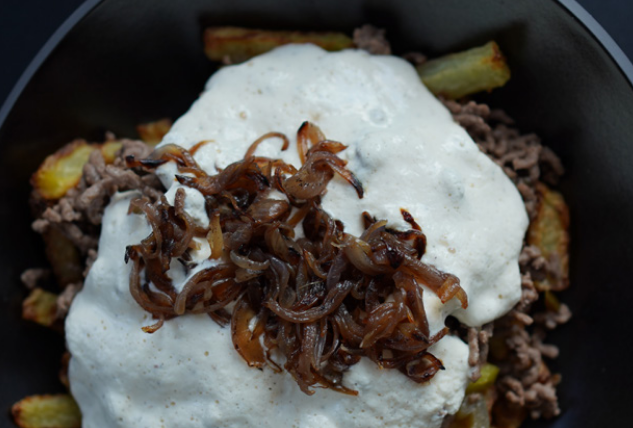

Home
Solid, low carb recipes to turbocharge your day
CHILLI CHEESE FRIES& BEEF

Ingredients:
150 g 1 % fat cottage cheese
Instructions:
Start with making the fries. Crispy air fryer potatoes.
While the potatoes are baking, add into a blender
cottage cheese, american cheese, milk, a pinch of salt,
black pepper, and garlic powder into a blender
and mix for 20 seconds until smooth.
10 minutes before the potatoes are ready, heat a pan
(24cm/9,5inch) on medium heat, add in oil and add
onions. Fry the onions for 2-5 min until caramelized.
Switch to medium-high, add in the beef and keep
frying for 1-2 minutes with occasional stirring until
the beef is browned. Add Jalapenos, cumin and chilli
powder, and keep stirring for another 30 seconds.
Heat up the cheese sauce in the microwave for
20 seconds just until it is warm.
Add fries to a plate, top with beef and then
cheese sauce. Enjoy!
Macros: